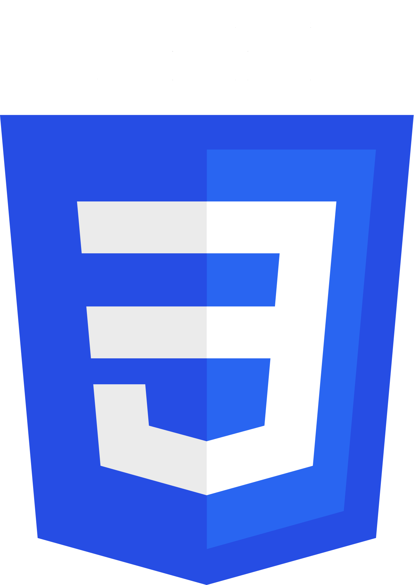
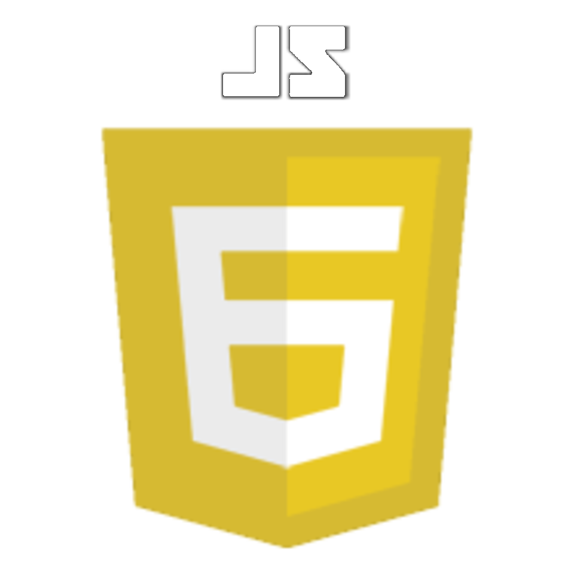
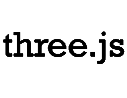
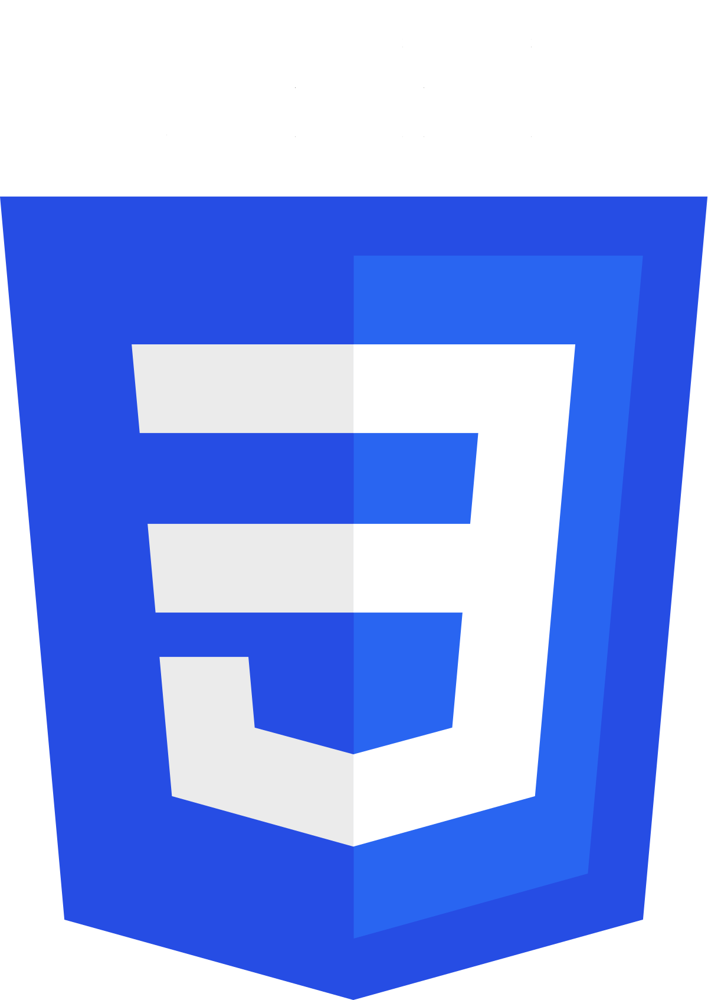
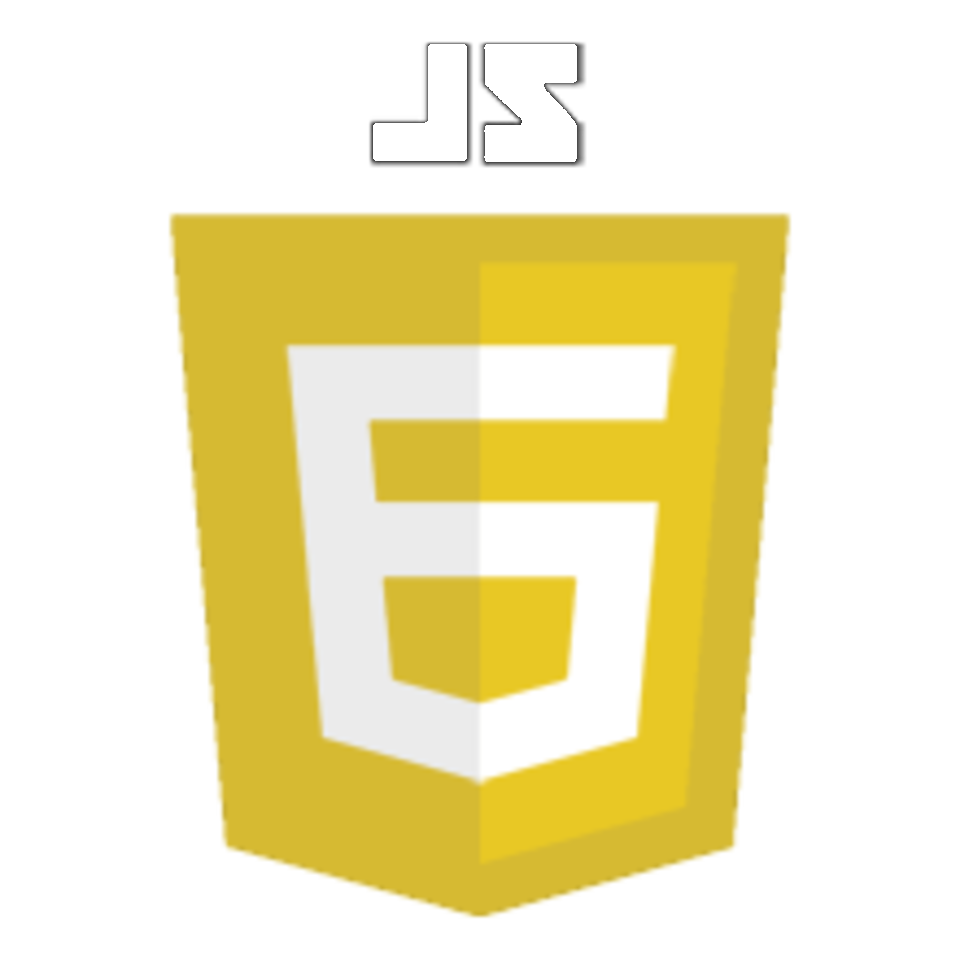
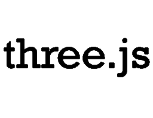

About
Hello! My name is Brad and I enjoy building websites, applications, and immersive experiences. While I’ve always loved computers, my passion for coding is relatively new. I stumbled upon this new venture when a friend and I were trying to bring a concept to life. We were at the point where our ideas needed to be tested but there was no funding for the project. So I decided to learn to code. To my surprise, I loved it!
I began using The Odin Project, Free Code Camp, and Codecademy as resources for this new chapter in my life. I decided to leave my formal education and career in healthcare behind. Fast-forward to today and I am working at a software company getting a foundation of technical knowledge under my belt. I continue to refine my coding skills while building my passion project. I'v recently discovered that 3D content, animations, and micro-interactions are a source of joy.
Here are a few technologies I’ve been working with recently:
 





I am currently refining my skills in React and TypeScript.
Outside of coding I have strong interests in Brazilian Jiu Jitsu (BJJ), online-gaming, and spending time with my daughter.
Experience
My background is in healthcare, specifically in the critical care setting. I am used to a fast-paced, high stress environment with a lot of attention to detail. I provided nutrition and hydration for the sickest patients in the Columbus, Ohio area.
During my career I reached the top of my field and helped expand the social norms of what Registered Dietitians (RDs) are able to do.
I intend to utilize my
ability to work well on a team,
effectively communicate, and
deliver detailed work that I've
refined over the last decade in the software engineering space.
Within the last year I have since transitioned into the tech field. I am currently getting a solid foundation as a tech lead with a software company. I continue to work on my coding skills in my free time.